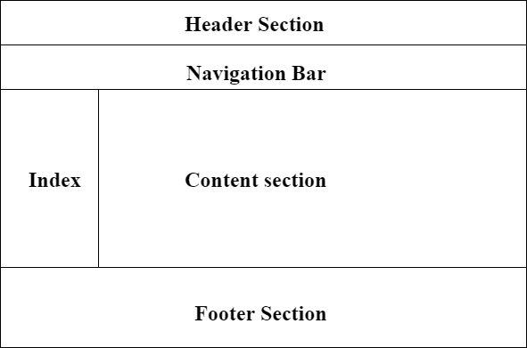
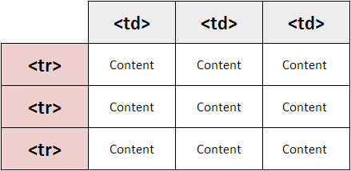
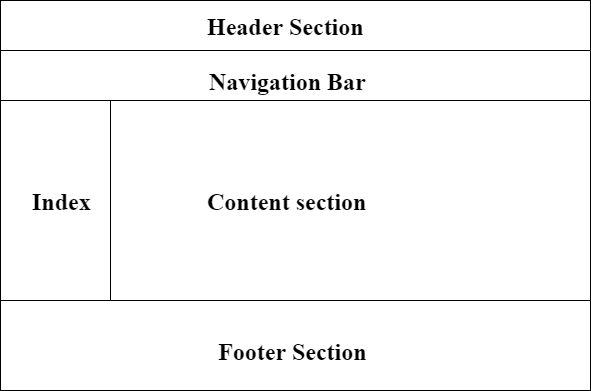

This is HTML Lesson.
- Head.HTML

# The head tag contains metadata (document title, character set, styles, links, scripts), specific information about the web page that is not displayed to the user. Metadata provides browsers and search engines with technical information about the web page.
# The head tag includes the following elements:
# The title tag defines the title of a web page (required). It may be confused with the h1 tag, but they are different. The h1 tag specifies the title of page content, whereas the title tag is metadata representing the title of the entire HTML content and not its content.
The style tag contains CSS code that defines how HTML elements should be rendered in a browser.
The base tag defines an absolute (base) URL for all relative URLs.
The link tag defines the relationship between the current HTML document and the resource to which it refers, or contains a link to an external style sheet. It can have two attributes: rel="stylesheet" and href.
The meta tag provides additional information (metadata) about HTML document. The head of a page can include different kinds of meta elements that may contain name and content attributes.
The scrip tag contains a script (generally JavaScript), or reference to an external file with scripts.This element may not be included in head. Sometimes, it is better to put it at the bottom of body. The script element may seem empty, but it's not.
The noscripttag defines an alternate text, which is displayed, if the browser doesn’t support scripts or scripts are disabled by the user.
- Body.HTML
# The body tag defines the document's body.
The bodyelement contains all the contents of an HTML document, such as headings, paragraphs, images, hyperlinks, tables, lists, etc.
#Note: There can only be one body element in an HTML document.
- Linkpage.HTML
A link (short for hyperlink) is an HTML object that allows you to jump to a new location when you click or tap it. Links are found on almost every webpage and provide a simple means of navigating between pages on the web. ... Most text links are blue, since that is standard color web browsers use to display links
What is link in HTML?
A link is a connection from one Web resource to another. ... The link starts at the "source" anchor and points to the "destination" anchor, which may be any Web resource (e.g., an image, a video clip, a sound bite, a program, an HTML document, an element within an HTML document, etc.).
The a tag defines a hyperlink, which is used to link from one page to another.
The most important attribute of the a element is the href attribute, which indicates the link's destination.
By default, links will appear as follows in all browsers:
An unvisited link is underlined and blue
A visited link is underlined and purple
An active link is underlined and red
- Page Structure.HTMl

- header - Defines a header for a document or a section
- nav - Defines a set of navigation links
- section - Defines a section in a document
- article - Defines an independent, self-contained content
- aside - Defines content aside from the content (like a sidebar)
- footer - Defines a footer for a document or a section
- Form.HTML
An HTML form is used to collect user input. The user input is most often sent to a server for processing.
- Table.HTML
- Table2.HTML
#HTML tables allow web developers to arrange data into rows and columns. Example. Company, Contact, Country. Alfreds Futterkiste, Maria Anders, Germany. Centro ...
#HTML tables can have borders of different styles and shapes.

- Table3.HTML ASsignment
- Link ASsignment
# The head tag contains metadata (document title, character set, styles, links, scripts), specific information about the web page that is not displayed to the user. Metadata provides browsers and search engines with technical information about the web page.
# The head tag includes the following elements:
# The title tag defines the title of a web page (required). It may be confused with the h1 tag, but they are different. The h1 tag specifies the title of page content, whereas the title tag is metadata representing the title of the entire HTML content and not its content. The style tag contains CSS code that defines how HTML elements should be rendered in a browser. The base tag defines an absolute (base) URL for all relative URLs. The link tag defines the relationship between the current HTML document and the resource to which it refers, or contains a link to an external style sheet. It can have two attributes: rel="stylesheet" and href. The meta tag provides additional information (metadata) about HTML document. The head of a page can include different kinds of meta elements that may contain name and content attributes. The scrip tag contains a script (generally JavaScript), or reference to an external file with scripts.This element may not be included in head. Sometimes, it is better to put it at the bottom of body. The script element may seem empty, but it's not. The noscripttag defines an alternate text, which is displayed, if the browser doesn’t support scripts or scripts are disabled by the user.
# The body tag defines the document's body. The bodyelement contains all the contents of an HTML document, such as headings, paragraphs, images, hyperlinks, tables, lists, etc.
#Note: There can only be one body element in an HTML document.
A link (short for hyperlink) is an HTML object that allows you to jump to a new location when you click or tap it. Links are found on almost every webpage and provide a simple means of navigating between pages on the web. ... Most text links are blue, since that is standard color web browsers use to display links What is link in HTML? A link is a connection from one Web resource to another. ... The link starts at the "source" anchor and points to the "destination" anchor, which may be any Web resource (e.g., an image, a video clip, a sound bite, a program, an HTML document, an element within an HTML document, etc.). The a tag defines a hyperlink, which is used to link from one page to another. The most important attribute of the a element is the href attribute, which indicates the link's destination. By default, links will appear as follows in all browsers: An unvisited link is underlined and blue A visited link is underlined and purple An active link is underlined and red

- header - Defines a header for a document or a section
- nav - Defines a set of navigation links
- section - Defines a section in a document
- article - Defines an independent, self-contained content
- aside - Defines content aside from the content (like a sidebar)
- footer - Defines a footer for a document or a section
An HTML form is used to collect user input. The user input is most often sent to a server for processing.